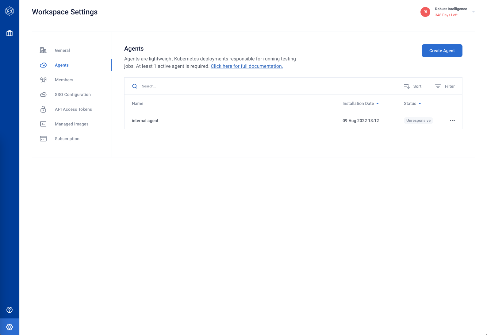
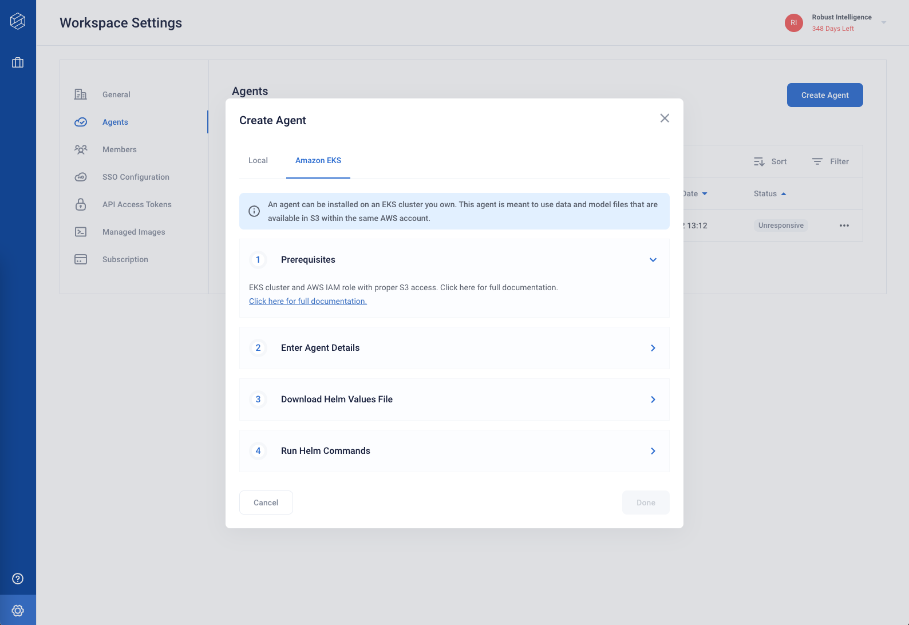
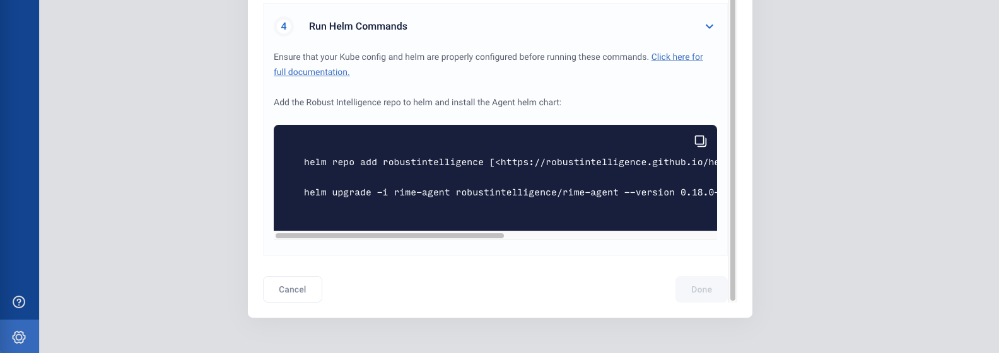

Agent Configuration
Agent configuration is handled in the organization settings section of the RI Platform’s web client. Agents are created at the organization level and can be assigned to one or more workspaces.
Note that only organization administrators (see User Management) have permissions to create and edit agents.
Click the “Create Agent” button on the right to get started. This will open up a form.
Toggle for the agent type that corresponds to your setup (“Local” or “Amazon EKS”) and fill out the details accordingly.
For “Amazon EKS” configuration, the ARN for S3 access should correspond to the IAM role for the agent’s service account (see Requirements for more details).
Once you have completed the form, you will receive some Helm commands — copy these and proceed to Deploying the Agent.